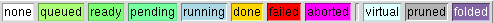
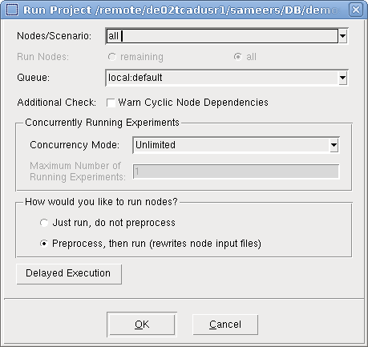

Sentaurus Workbench
2. Running Projects
2.1 Opening Sentaurus Workbench Projects
2.2 Understanding Node Colors
2.3 Running Projects
2.4 Selecting Nodes to Run
2.5 Displaying Node Output and Node Information
2.6 Viewing Simulation Results
2.7 Visualizing Selected Nodes Together
Objectives
- To run a Sentaurus Workbench project.
2.1 Opening Sentaurus Workbench Projects
In this section, you will use the project SimpleMOS, which is located in the directory Applications_Library/GettingStarted/swb/.
To open the SimpleMOS project:
- Locate and select this project in the projects browser.
- Choose Edit > Copy, or press Ctrl+C.
- Choose Edit > Paste, or press Ctrl+V, to copy the project under the $STDB directory or a subdirectory of it.
- Double-click the copy of the project under $STDB.
The project opens on the Project tab of the main window (see Figure 1).
{kind=link}
Figure 1. Project tab showing tool flow (black box), project parameters (blue box), and simulation tree (red box). (Click image for full-size view.)
The tool flow refers to the sequence of simulation tools and their associated input files. In the SimpleMOS project, these are Sentaurus Process, Sentaurus Device, and Sentaurus Visual as seen in Figure 1. Below the tool flow, the project parameters (Lg, NWell, and so on) are listed.
To display the corresponding node numbers:
- Choose View > Tree Options > Show Node Numbers, or press the F9 key.
A complete sequence of simulation nodes (comprising all tools in the tool flow) form an experiment, that is, an experiment is a complete horizontal line in the table. Any number of experiments is possible for a given tool flow if parameters are used.
To the right of the tool flow, there are variables and extracted electrical parameters from the simulated Id–Vg characteristics: tox, Vtgm, Id, SS, and gm (use the scroll bar to see them all). When the simulation is completed, the extracted electrical values appear in their respective columns.
2.2 Understanding Node Colors
Each simulation node in a project has a color that indicates its status. The color chart in the lower-right corner of the main window (see Figure 2) indicates what each color means.

Figure 2. Colors indicating different node statuses.
For example, when the project SimpleMOS is opened, the nodes are white, indicating that the nodes were not simulated previously. This is because a ready-to-run project has been copied from the Applications_Library.
The way in which a Sentaurus Workbench project is displayed is very flexible. You can choose to display solely the tool flow, or the number of the simulation nodes, or to display parameters (splits), variables, extracted values, and other details.
To use this feature:
- From the View menu, select or clear the various options, or choose View > Tree Options for more features.
2.3 Running Projects
To run a project:
- Choose Project > Operations >
Run, or press Ctrl+R, or click the
toolbar button.
The Run Project dialog box opens (see Figure 3). - Select which nodes to run (all unsimulated nodes by default) and which simulation queue to use (running on the local host is the default).
- Click OK to start the simulation.

Figure 3. Run Project dialog box.
Sentaurus Workbench runs the project, and the Project Log dialog box is displayed (see Figure 4) with real-time updates on the status of the project.
{kind=link}
Figure 4. Project Log dialog box. (Click image for full-size view.)
As the simulation runs, the nodes change status from "none" (white) to "queued" (light green) to "pending" (bright green) to "running" (blue) and finally to "done" (yellow). If a node fails, then it becomes "failed" (red).
To stop a running simulation:
- Choose Nodes > Abort, or press Ctrl+T, or click the toolbar button.
After the project run is completed, all variables are extracted (tox, Vtgm, Id, SS, and gm) and displayed to the right of the tool flow on the Project tab.
2.4 Selecting Nodes to Run
Instead of running an entire project, you can run only a subset of nodes. To do this, you can select the nodes in the table (hold the Ctrl key to select multiple nodes). For example, to run only the Sentaurus Process nodes associated with LDD_Dose=1e+14, select nodes 9, 11, 13, and 15, and then click OK (see Figure 5).
{kind=link}
Figure 5. Selecting nodes in the table. (Click image for full-size view.)
To run an entire experiment (row), click the row number. Multiple rows can be selected as well.
To select all nodes to the right of a certain node, that is, to run all nodes starting with a particular one, click that node and choose Nodes > Extend Selection To > Leaves.
Similarly, all nodes that must be completed before a particular node can be run are selected using Nodes > Extend Selection To > Root. Other node selection criteria can be found by choosing Nodes > Select.
2.5 Displaying Node Output and Node Information
To find the properties of any node, double-click the node. The Node Explorer opens (see Figure 6).
{kind=link}
Figure 6. Node Explorer window. (Click image for full-size view.)
In the Node Explorer, the data belonging to a node is split into three groups:
- The Input and Output tab displays the node results and output files associated with the node.
- The Node Data tab shows information about the execution hosts, job ID, run status, and other related information.
- The Job Log tab displays the job log file, prologue, epilogue, and execution commands.
Some of the output files can be associated with a file viewer, which opens immediately when you click Launch. Text files are displayed in the file viewer in the right pane, where you can search and scroll through the selected content.
In addition, the information written to standard output, when a simulation is running, can be viewed by choosing Nodes > View Output, or pressing Ctrl+W.
2.6 Viewing Simulation Results
A given node has several input and output files associated with it. These can be viewed by right-clicking a node and choosing Visualize. You can view all the text and log files, using the text editor, by selecting them. Alternatively, to view the output of a node, click the toolbar button and select an option.
Sentaurus Visual is the primary tool used to visualize the resulting structures from process simulations, mesh and structure generation, as well as the device simulation results, such as I–V curves. To invoke Sentaurus Visual quickly on all available files for visualization, click the toolbar button.
2.7 Visualizing Selected Nodes Together
One of the most common tasks in Sentaurus Workbench is to compare simulation characteristics of different experiments to each other.
You can easily use this functionality when coding your visualization scripts. The projects GettingStarted/swb/SimpleMOS and GettingStarted/swb/SimpleMOS_py demonstrate this capability for Sentaurus Visual Tcl and Python modes, respectively. However, the approach applies to any visualization tool.
Start Sentaurus Workbench, copy and open the project, and run all the nodes. Then, select several Sentaurus Visual nodes that correspond to the same Vd bias condition. Alternatively, you can select these nodes by an expression as follows:
- Right-click a node and choose Select > By Expression.
- In the Select Nodes By Expression dialog box, enter all|last:{$Vd==1.0}.
- Click OK.
For more details, see Section 7.1 Node Selection by Expression.
After you select the nodes, click the Run Selected Visualizer Nodes Together toolbar button to generate all of the corresponding curves in Sentaurus Visual as shown in Figure 7.
{kind=link}
Figure 7. SimpleMOS project showing the toolbar button to launch all visualization scripts together. (Click image for full-size view.)
Sentaurus Visual assembles all of the corresponding Id–Vgs curves in one plot (see Figure 8). The legend contains only those Sentaurus Workbench parameters required to uniquely identify each selected curve.
{kind=link}
Figure 8. Assembled Sentaurus Visual curves. (Click image for full-size view.)
Technically, Sentaurus Workbench performs the following steps when you click the Run Selected Visualizer Nodes Together button:
- It checks whether any visualization nodes need to be preprocessed.
- It concatenates the preprocessed scripts of the selected nodes, adding some global and node-specific preset variables.
- It runs the concatenated command files of all selected nodes in one Sentaurus Visual tool instance.
To ensure that Sentaurus Workbench preprocesses the selected nodes before concatenating the preprocessed scripts, you must preprocess the selected nodes manually by pressing Ctrl+P. To force Sentaurus Workbench to automatically preprocess the selected nodes, you must set Visualization > Run Selected Visualizer Nodes Together > Always Preprocess Nodes to Yes in the preferences. Preferences are discussed in Section 5. Preferences and Settings.
Sentaurus Workbench adds the following global preset variables:
- nodelist: List of node numbers of all selected nodes
- commonParameters: String containing all keyword–value pairs common to all selected nodes
- runVisualizerNodesTogether: Set to 1 to check the run mode if a script is called using the toolbar button
The following preset variables are specific to each node:
- legend: Legend text of the current curve. It is a string composed of all Sentaurus Workbench parameter name=values pairs, which uniquely identify the curve within the set of selected experiments.
- color: A unique color from a color palette of 10 entries. For the 11th node, the cycle restarts and the curve has the first color again.
- marker: After the color palette is cycled through, a new marker type is set.
- line: After the color palette is cycled through, a new line type is set.
- cv_index: Index of the current curve, starting from 1.
As the preprocessed command files are executed sequentially in the same Sentaurus Visual session, consider the following points:
- Unique names: Any variable, dataset, and curve name that is
created in the script must be unique. This is easily achieved by including a
unique node number @node@. For example:
create_curve -name IdVg(@node@)...
- Execute code only once: Certain operations such as creating a plot
frame must be executed only once. This can be accomplished by using:
if {[llength [list_plots Plot_1D]]==0} { create_plot -1d -name Plot_1D ... } - Detect visualization mode: Executing multiple nodes can be time-consuming.
For a fast response, you might separate expensive postprocessing tasks from pure curve
visualization tasks. Whether the script is called in batch mode or visualization mode is determined by:
# set curve properties only if script is called through run visualizer button if {[info exists runVisualizerNodesTogether]} { ... } - Detect node status: Visualization can also be performed during
simulation. To check the current node status, specify:
# determine sdevice node status set status @[gproject::GetNodeStatus @node|sdevice@]@ ...
# Extract curve parameters only when sdevice node has status done if { $status == "done" } { load_library extract ... } - Set curve attributes: To easily identify a curve, use the Sentaurus
Workbench preset variable legend, which provides a distinct and descriptive
legend label. Furthermore, the preset color defines a unique color. If each node
creates a set of curves, distinguish them by explicitly choosing different markers or line
styles for each. If you need to select more than 10 nodes and to distinguish them, use a
combination of color and line as in the following example, or
color/marker presets, which allow 60 or 80 unique curve attributes, respectively.
set_curve_prop IdVg($n) -label "IdVg $legend" \ -color $color -line_style $line -line_width 3
Click to view the commented Sentaurus Visual command file IdVg_vis.tcl.
Here are the equivalent Sentaurus Visual Python commands:
- Unique names:
n = @node@ sv.create_curve(name=f'IdVg({n}})', ... - Execute code only once:
if 'Plot_1D' not in sv.list_plots(): sv.create_plot(name='Plot_1D', xy=True) ... - Detect visualization mode:
# Set curve properties only if script is run using Run Visualizer Nodes Together if 'runVisualizerNodesTogether' in globals(): ... - Detect node status:
# Determine Sentaurus Device node status status = '@[gproject::GetNodeStatus @node|sdevice@]@' ... # Extract device parameters only when Sentaurus Device node has status done if status == 'done': # Import extraction module import svisualpylib.extract as ext ... - Set curve attributes:
sv.set_curve_prop( f'IdVg({n})', plot='Plot_1D', color=color, label=f'IdVg {legend}', line_style=line, line_width=3 )
Click to view the commented Sentaurus Visual command file IdVg_vis.py.
Copyright © 2022 Synopsys, Inc. All rights reserved.